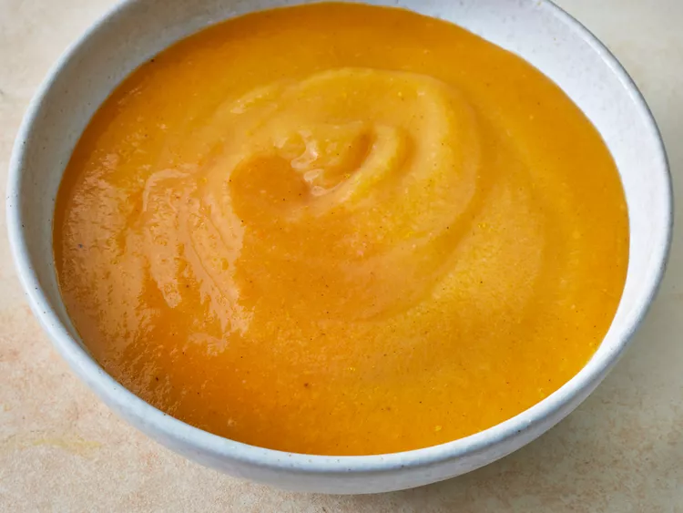

Butternut Squash Soup

Description:
This is a thick, rich butternut squash soup with tons of flavor. Something I whipped up off the top of my head, with things I had on hand. Super easy, quick, and a great way to use squash. An instant hit at my house.
Ingredients:
- butter
- Onion
- celry
- carrots
- potatoes
- butterntu squash
- chicken stock
- salt and pepper
Steps:
- gatther the ingredients
- melt the butter in a large pot
- cook onion, celery, carrot, potatoes, and squash until browend
- let it all simmer
- blend the soup until smooth, serve and enjoy.